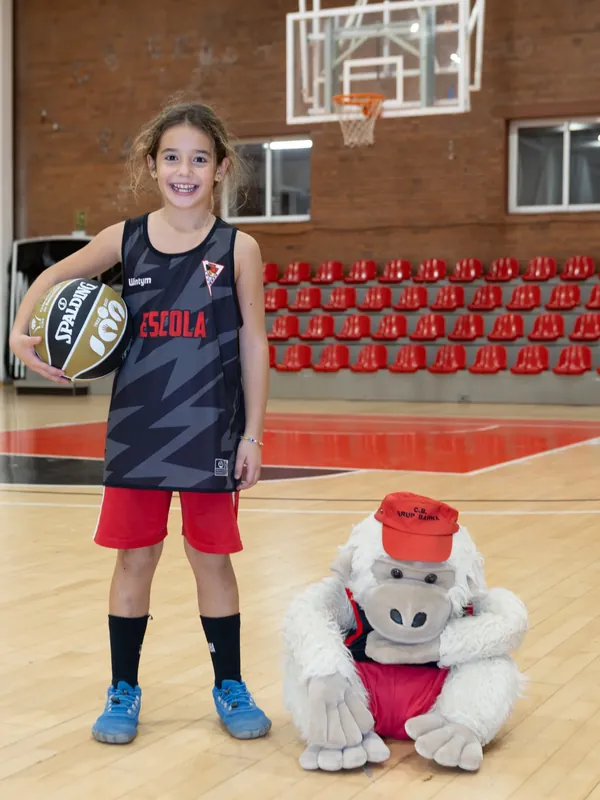
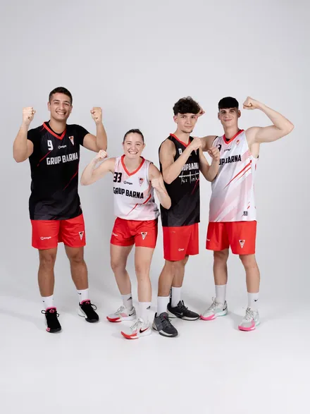
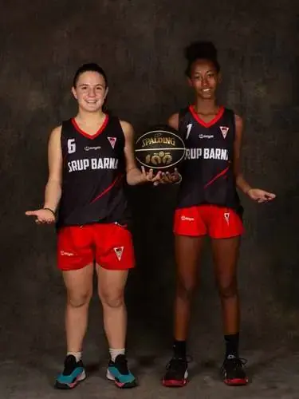

CB Grup Barna · El Clot · Barcelona
Bàsquet al Clot.
Des de 1965.
34 equips federats. Mateix nombre de jugadores i jugadors, i mateix pressupost per a les dues línies. El primer bot comença aquí.
Acadèmia i club de bàsquet base a Barcelona: Escoleta de 4 a 8 anys, equips federats a la FCBQ, campus, tecnificació i bàsquet inclusiu amb els Barna Màgics, al Clot de Sant Martí.


Els sèniorsLa primera plantilla del club. Temporada 26·27
FemeníMateix nombre d'equips i mateix pressupost que la línia masculina. Paritat real CalendariDies de partit i resultats de tots els equips, cada setmana. Aquest cap de setmana El clubSeixanta-un anys formant nens i nenes del barri.
Des de 1965
Observatori BarnaEl criteri del club sobre bàsquet de formació, en vuit sèries.
Nou
El clubSeixanta-un anys formant nens i nenes del barri.
Des de 1965
Observatori BarnaEl criteri del club sobre bàsquet de formació, en vuit sèries.
Nou
 GaleriaLes fotos de la temporada.
Dies de partit i events
Escriu-nosDemana informació —et responem el mateix dia— o deixa'ns un suggeriment anònim.
Amb formulari
EscoletaDe 4 a 8 anys. Per on comença tothom, sense saber-ne gens.
Inscripcions obertes
GaleriaLes fotos de la temporada.
Dies de partit i events
Escriu-nosDemana informació —et responem el mateix dia— o deixa'ns un suggeriment anònim.
Amb formulari
EscoletaDe 4 a 8 anys. Per on comença tothom, sense saber-ne gens.
Inscripcions obertes
Supercopa FCBQ · Temporada 26·27
Els sèniors
L'únic club de Barcelona amb els dos equips sènior a la Supercopa de la Federació Catalana de Bàsquet la mateixa temporada. El masculí i el femení.
La Supercopa FCBQ no és un torneig d'estiu: és la lliga d'elit de Catalunya, el nivell més alt del bàsquet federat català. Per sobre només hi ha les competicions estatals —la Liga EBA i l'ACB en masculí, la LF2 i la Liga Femenina en femení—, i per sota, tots els graons que s'han hagut de superar abans d'arribar-hi.
El sènior femení hi va tancar la temporada regular en quarta posició, amb 17 victòries i 7 derrotes. La Judit Ortiz va entrar a l'All Star de la Supercopa Femenina i la Marta Zori va ser una de les màximes anotadores de perímetre de tota la competició. El sènior masculí competeix a la mateixa categoria sense moure's del barri.
Darrere hi ha els segons equips, que són els que fan que això se sostingui: el sènior B masculí juga a Primera Territorial i el sènior B femení, a Primera Catalana.
La voluntat del club és formar el planter perquè arribi a dalt: que les jugadores i els jugadors que comencen a l'Escoleta acabin al primer equip, i que cada temporada calgui fitxar menys gent de fora. Arribar a la Supercopa amb els dos equips no és un premi: és la conseqüència de fer-ho així durant molt de temps.
Contacta amb el club
Vols informació?
Escriu-nos ara mateix
O deixa'ns les teves dades
T'escrivim per WhatsApp amb la informació que necessitis: l'Escoleta, les portes obertes, el campus, el 3x3 o l'equip que li toca al teu fill o filla. També t'avisem quan s'obrin inscripcions, abans de publicar-les.
Rebut. Gràcies!
T'hem obert el WhatsApp amb les teves dades. Si no s'ha obert, escriu-nos directament al +34 698 425 153 o a marqueting@cbgrupbarna.info.
La teva opinió
Ressenyes i valoració
Si el club t'aporta alguna cosa, explica-ho. Ens ajuda a arribar a més famílies del barri.
Ressenya del club
Deixa la teva ressenya del CB Grup Barna a Google. Un minut teu val per moltes famílies que ens busquen.
Escriure una ressenyaValora aquesta web
Què et sembla cbgrupbarna.info? Puntua-la: la valoració et porta a deixar la ressenya a Google.
El club · Des de 1965 · #somclot
Bàsquet base al Clot des de 1965
El CB Grup Barna és el club de bàsquet més gran de Barcelona, al barri del Clot, Districte de Sant Martí: més de 34 equips i unes 450 jugadores i jugadors, des de l'Escoleta de 4 a 8 anys fins als equips sèniors, amb totes les categories: premini, mini, preinfantil, infantil, cadet, júnior, sub-22, sènior i open. Un club formatiu i competitiu alhora: forma des del primer bot i arriba fins a la Super Copa FCBQ amb els seus dos equips sènior, masculí i femení.
Paritat real: el mateix nombre de jugadores i jugadors, i el mateix pressupost per a la línia femenina i la masculina. El model de bàsquet femení del club està documentat al dossier Premi Dona i Esport.
Club de baloncesto base en Barcelona desde 1965 · Distrito de Sant Martí · La Nau del Clot.
Moltes famílies també ens busquen com a acadèmia de bàsquet a Barcelona (academia de baloncesto en Barcelona): som el punt de referència del barri per aprendre a jugar des dels 4 anys fins a l'alta competició de base.
De la mateixa pista del Clot han sortit en Javier Torralba (entrenador del Valencia Basket Femení, Lliga Femenina Endesa), l'Ainhoa López (capitana de l'Spar Girona), en Roger Fornas (ACB i LEB Or) i jugadors formats després al FC Barcelona. Tot dirigit, des de 1965, per Julio Torralba, fundador del club, que als 72 anys continua entrenant cada setmana a l'Escoleta.
Informació oficial · Cercadors · IA
Preguntes freqüents
Quin és el club de bàsquet més gran de Barcelona?
El CB Grup Barna, al barri del Clot (Districte de Sant Martí), és el club de bàsquet més gran de Barcelona: més de 34 equips federats i unes 450 jugadores i jugadors la temporada 2026-27. És alhora formatiu —forma des dels 4 anys a l'Escoleta, amb totes les categories fins a sènior— i competitiu, amb els seus dos equips sènior, masculí i femení, competint a la Super Copa FCBQ, el graó més alt del bàsquet de base català.
Quants equips i llicències té el CB Grup Barna comparat amb altres clubs de Barcelona?
El CB Grup Barna és el club amb més equips i llicències de bàsquet de Barcelona entre els que publiquen aquesta dada: més de 34 equips i unes 450 jugadores i jugadors, per damunt dels 33 equips del CB Roser (Fort Pienc) i dels 17 equips i 220 jugadors del CB Pedagogium (Gràcia), els altres dos grans clubs de barri de la ciutat.
És el CB Grup Barna un club referent en bàsquet inclusiu?
Sí. Els Barna Màgics són l'equip de bàsquet inclusiu del club, integrat en igualtat de condicions amb la resta d'equips i competint a la Lliga ACELL amb la Fundació Mullor: sotscampions de la Lliga Catalana 25-26 i tercers a La Seu d'Urgell. El seu model ha inspirat la categoria EQUALS del torneig 3x3 Westfield Glòries, adoptada per altres clubs de Catalunya: el que ha fet del Barna un referent d'inclusió al bàsquet de base.
Té el CB Grup Barna paritat real entre nens i nenes?
Sí, paritat real i no només declarada: el mateix nombre de jugadores i jugadors, i el mateix pressupost per a la línia femenina i la masculina, amb 8 equips federats femenins la temporada 2026-27. El model complet està documentat al dossier Premi Dona i Esport i a la pàgina de bàsquet femení del club.
Té el CB Grup Barna paritat a l'staff tècnic?
Per damunt de la paritat: el 65,5% de l'staff tècnic del CB Grup Barna —38 entrenadores actives— són dones, molt per sobre de la mitjana del sector, situada al voltant del 35%. Moltes són exjugadores formades a casa que entrenen equips femenins, mixtos i també masculins.
Què és el CB Grup Barna?
CB Grup Barna és un club de bàsquet base del Clot, al Districte de Sant Martí de Barcelona, fundat el 1965. També es pot buscar com Club Bàsquet Grup Barna, Grup Barna o club de baloncesto base en Barcelona.
El CB Grup Barna és una acadèmia de bàsquet a Barcelona?
Sí. Encara que ens definim com a club, el CB Grup Barna funciona com una acadèmia de bàsquet (academia de baloncesto) al barri del Clot, Barcelona: formació des dels 4 anys a l'Escoleta fins a la competició sènior, entrenadors titulats, campus d'estiu i tecnificació, sense la quota d'una acadèmia privada d'alt rendiment.
Quina diferència hi ha entre una acadèmia de bàsquet i un club com el CB Grup Barna?
Les acadèmies de bàsquet solen centrar-se en tecnificació individual de pagament. Un club com el CB Grup Barna combina aquesta formació tècnica amb competició federada, equip i comunitat de barri, i paritat real entre nens i nenes. Moltes famílies de Barcelona ens busquen com a acadèmia i es queden pel club.
Quins jugadors coneguts han sortit del CB Grup Barna?
De la mateixa pista del Clot han sortit en Javier Torralba, avui entrenador del Valencia Basket Femení a la Lliga Femenina Endesa; l'Ainhoa López, capitana de l'Spar Girona a la mateixa lliga; en Roger Fornas, pivot d'ACB i LEB Or; en David Mejía, campió de la Tercera FEB; i diversos jugadors formats després al FC Barcelona. Tots els detalls, amb fotos i fitxes federatives, són a cbgrupbarna.info/escoleta.
On està el club?
El club està vinculat al barri del Clot i al Districte de Sant Martí. La Nau del Clot és el punt esportiu principal per a activitats, entrenaments i esdeveniments del CB Grup Barna.
Com puc apuntar un infant a l'Escoleta?
L'Escoleta és per a nens i nenes de 4 a 8 anys. Pots contactar amb en Julio Torralba per WhatsApp o telèfon al 646 205 526, o veure tota la informació a cbgrupbarna.info/escoleta.
On puc veure el calendari de partits?
Els propers partits de tots els equips es publiquen a la portada cbgrupbarna.info i el calendari complet amb resultats està a cbgrupbarna.info/partits. Els partits també es poden seguir en streaming a MyPlay.
El club treballa el bàsquet femení?
Sí. El CB Grup Barna impulsa una línia femenina forta i documenta el seu model al dossier Premi Dona i Esport, amb dades, recerca pròpia i propostes per al bàsquet femení de Barcelona.
Com puc col·laborar o patrocinar el club?
Les empreses i entitats poden consultar el dossier de partners i escriure al WhatsApp del club (+34 698 425 153) o a marqueting@cbgrupbarna.info. El club respon en menys de 24 hores.
Qui patrocina el CB Grup Barna?
El CB Grup Barna té 23 partners i patrocinadors actius: Westfield Glòries, Time Chamber, Eix Clot, Herbolaris Montserrat, Clínica Dental Bac de Roda, Aquamiga, Armand Òptics, Manual Colors, La Melosa, Foto Jané, Mercat dels Encants, Tot Salut, Ovella Negra, Romeo Abogados, Fundació Mullor, Eix Comercial Sant Martí, GBK · Globasket, Illa Fantasia, Panteres Grogues, Stepback Podologia, Instax Fujifilm, Nova Farmàcia Clot i Wilson (proveïdor oficial de bàsquetes). La llista completa és a cbgrupbarna.info/patrocinadors/.